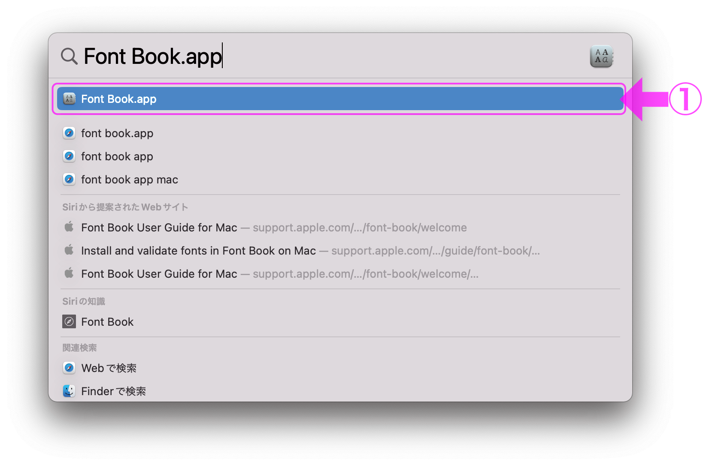
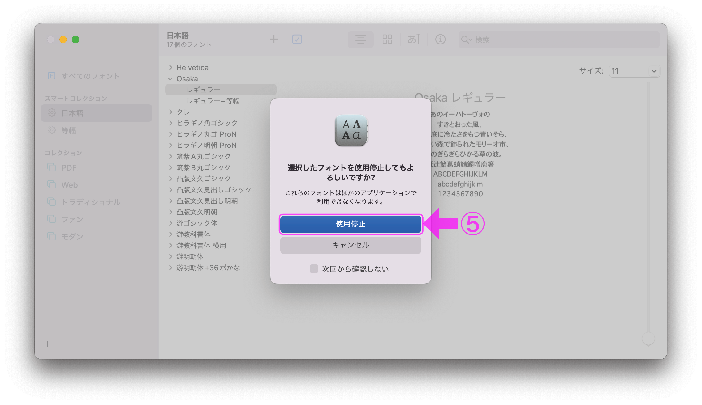
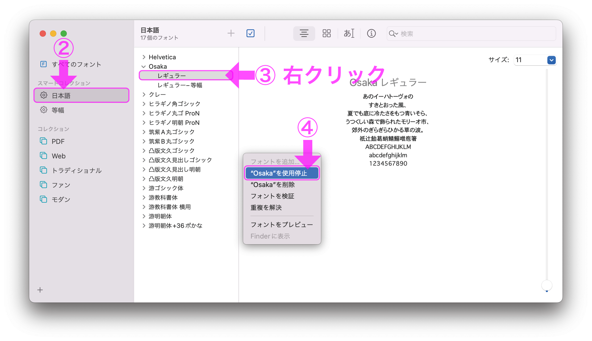
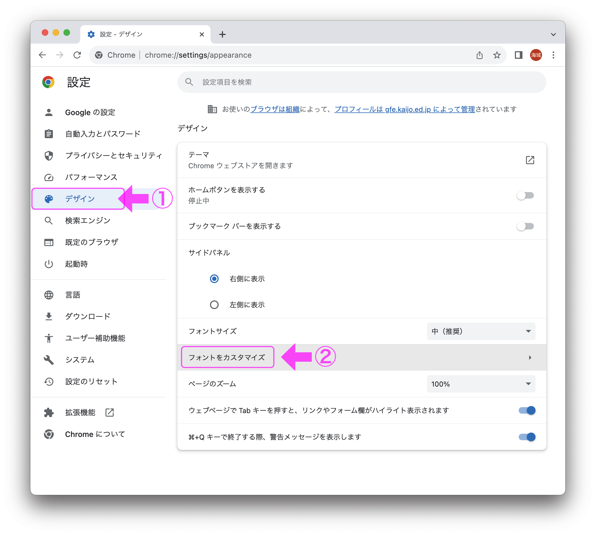
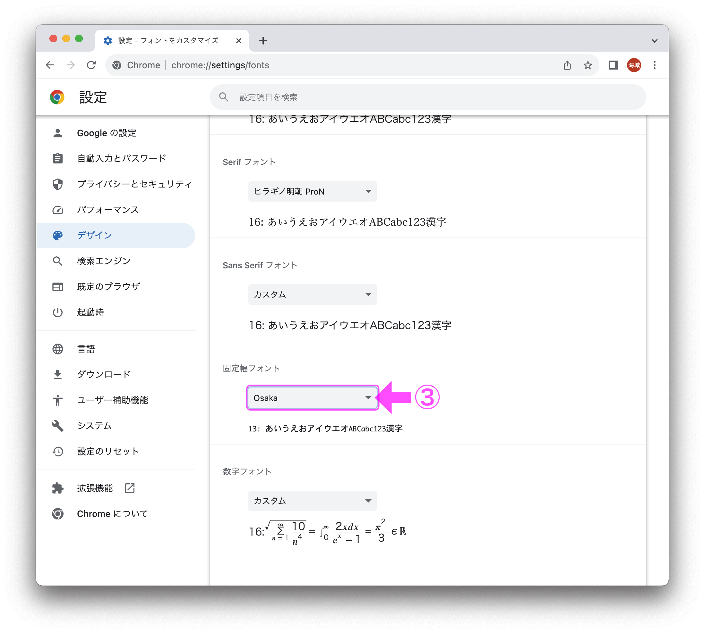

Google Chromeで等幅フォントを設定する
本サイトのプログラミングのコードやスプレッドシートの関数を表示するときは、等幅フォントを使用することを強く推奨します。以下は、Google Chromeにおける等幅フォントの設定方法です。
Osakaレギュラーの停止
- Spotlight（⌘＋スペース）にFont Book.appと入力し、Font Book.appを開きます。 
- [日本語] ＞ [Osaka] ＞ レギュラー を右クリックし、メニューの"Osaka"を使用停止を選択します。
- 確認画面がでてくるので、使用停止をクリックします。 
- Google Chromeをすでに開いている場合は、一度終了し（⌘＋Q）、再度Google Chromeを起動します。
※ Osakaの左の＞マークをクリックして、Osakaを展開します。
※ OSのバージョンによっては[スタイルを無効化]と表示されます。
※ Osaka自体が無効化されていたら、Osakaを有効化します。
※ Osakaがインストールされてない場合は、インストールします。
固定幅フォントの変更
- Google Chromeの設定を開き（⌘＋カンマ,）、[デザイン] ＞ [フォントをカスタマイズ] を開きます。 
- 固定幅フォントをOsakaに変更します（すでにOsakaになっている場合もあります）。 
- 次の表示で、0(ゼロ)の中に斜線が入っていれば、Osakaの固定幅フォントで表示されています。
ABCDEFGHIJKLMNOPQRSTUVWXYZ
abcdefghijklmnopqrstuvwxyz
0123456789 !"#$%&'()=~|`{}+*<>?_-^¥@[];:,./_